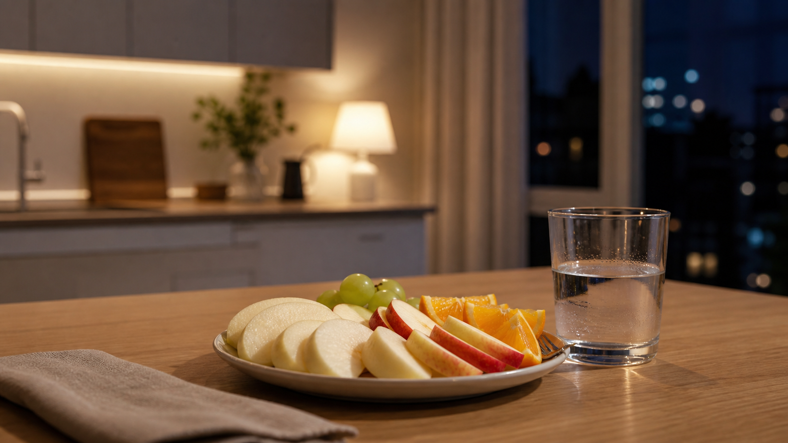

TSTC LAB · 2026.05.28
피곤할 때 찾게 되는 과일
몸이 지친 날에는 과일을 고르는 기준도 조금 달라집니다.

피곤한 날에는 평소 좋아하던 과일도 다르게 느껴집니다. 단단하게 씹어야 하는 과일이 부담스럽고, 향이 강한 과일은 한 입 전부터 멀게 느껴지기도 합니다. 반대로 차갑고 수분감이 있는 과일은 생각보다 쉽게 손이 갑니다.
이것은 단순한 입맛의 변화가 아닙니다. 피로한 상태에서는 사람의 감각이 더 예민해지거나, 반대로 더 단순한 자극을 찾기도 합니다. 그래서 같은 과일도 어떤 날에는 산뜻하고, 어떤 날에는 번거롭게 느껴질 수 있습니다.
피곤한 날의 과일 선택은 취향보다 상태에 가까울 때가 있습니다.
TSTC는 이 차이를 중요하게 봅니다. 달기만 한 과일이 늘 정답은 아닙니다. 어떤 사람에게는 은은한 단맛과 가벼운 산미가 더 잘 맞고, 어떤 사람에게는 씹는 힘이 적게 드는 부드러운 식감이 더 편합니다.
과일 취향은 고정된 성격처럼 움직이지 않습니다. 피로, 식사 전후, 날씨, 함께 먹는 사람에 따라 같은 과일도 전혀 다른 경험이 됩니다.
과일코디네이터가 묻는 질문도 여기서 달라집니다. “어떤 과일을 좋아하세요?”보다 “언제 드실 과일인가요?”가 먼저일 수 있습니다. 저녁에 혼자 먹을 과일인지, 아이가 학교에서 돌아와 먹을 과일인지, 병문안으로 가져갈 과일인지에 따라 좋은 선택은 달라집니다.
피곤한 날에 찾게 되는 과일은 그 사람의 감각을 조용히 보여줍니다. 강한 맛을 원하는지, 시원한 수분감을 원하는지, 씹는 부담을 줄이고 싶은지. 그 작은 차이가 TSTC가 보려는 생활 속 감각입니다.